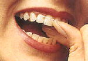
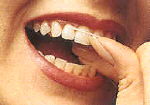
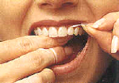

- Women and Periodontal Disease
- Mouth Care and Diabetes
- Dental Care and Your Heart
- How To Brush and Floss
- For Adults With Heart Disease
- Something To Smile About
- Tobacco and Gum Disease
- Assess Your Risk of Gum Disease
Women and Periodontal Disease
You are a woman.
You are unique.
And, as a woman, you have unique health care needs. You know that these needs change with your body; during puberty, pregnancy, or menopause, for example, and require you to take special care of yourself or to seek advice from a health care provider.
As your health care needs change, your oral care needs change, too. That's because your oral health and overall health are connected. Hormonal fluctuations throughout a woman's life can affect many tissues, including gum tissue. These changes may increase susceptibility to periodontal (gum) disease and require you to take special care of your oral health.
Taking care of your oral health is an important part of your overall health. Learning more about how one affects the other will help you to actively participate in your health care decisions.
As always, we will be happy to provide you with additional information about women and periodontal disease.
A pamphlet about this topic is available in our office, and from the publisher, the American Academy of Periodontology
Mouth Care and Diabetes
An Increased Risk for Periodontal Disease
When you have diabetes, you are at greater risk for periodontal disease. Any periodontal disease you may develop can be more severe and harder to control. Preventing or controlling periodontal disease requires ongoing care.
What Causes Gum Infections?
Bacteria in your mouth form a sticky, whitish film, called plaque, on teeth. If plaque is not removed daily, it can harden into a rough yellow or brown deposit called tartar.
Tartar is harder to remove from your teeth than plaque.
Bacteria from plaque and tartar can cause swollen, infected, and receding gums. More severe gum and bone disease may then occur.
Prevention
You can do some simple things that can help prevent periodontal disease. Follow these guidelines:
Use Good Oral Hygiene
Brush your teeth after each meal and floss daily. Don't forget to also brush your tongue. Your dentist may suggest aids to help keep your teeth clean.

Dental Care and Your Heart
Several theories exist to explain the link between periodontal disease and heart disease.
One theory is that oral bacteria can affect the heart when they enter the blood stream, attaching to fatty plaques in the coronary arteries (heart blood vessels) and contributing to clot formation.
Coronary artery disease is characterized by a thickening of the walls of the coronary arteries due to the buildup of fatty proteins. Blood clots can obstruct normal blood flow, restricting the amount of nutrients and oxygen required for the heart to function properly. This may lead to heart attacks.
Researchers have found that people with periodontal disease are almost twice as likely to suffer from coronary artery disease as those without periodontal disease.
How To Brush and Floss
Begin with a piece of waxed or unwaxed floss about 18 inches long. Lightly wrap most of the floss around the middle finger of one hand and the rest around the middle finger of the other hand.
 

To clean the upper teeth, hold the floss tightly between the thumb and forefinger of each hand. Gently insert the floss between the teeth using a back and forth motion.
Using both hands, move the floss up and down the side of one tooth. Repeat this technique on each side of all the upper teeth. To clean between the bottom teeth, you will find it easier to guide the floss using the forefinger of both hands.

A pamphlet about this topic is available in our office.
For Adults with Heart Disease
If you have heart disease, you need special consideration when you get dental treatment. Physicians and dentists know this, but this may be news to you, and that's why this booklet was written. As someone with heart disease, you have three responsibilities.
First, you need to establish and maintain a healthy mouth. This means practicing good oral hygiene and visiting your dentist regularly.
Second, you need to make sure your dentist knows you have a heart problem.
Finally, you must carefully follow your physician's and dentist's instructions when they prescribe special medications such as antibiotics.
Something to smile about.
If you feel that your teeth are too short and your smile is too 'gummy' or that your gumline is uneven, covering too much of some teeth, while leaving others the right length, a simple cosmetic treatment might be just right for you.
Your teeth probably are not 'too short' at all.
In fact, they are just the right length.
You simply have too much gum tissue covering your teeth and hiding your smile.
Crown lengthening procedures remove the excess gum tissue to expose more of the 'crown' of the tooth.
A pamphlet about this topic is available in our office.
Tobacco and Gum Disease.
As you probably already know, tobacco use is linked with many serious illnesses such as cancer, lung disease and heart disease, as well as numerous other health problems. .
What you may not know is tobacco users are at increased risk for periodontal disease.
Research shows . . .
Researchers also are finding that many of these problems occur more often in patients who use tobacco:
- Oral Cancer
- Bad Breath
- Stained Teeth
- Tooth Loss
- Bone Loss
- Loss of taste and smell
- Mouth Sores
A pamphlet about this topic is available in our office, and from the publisher, the American Academy of Periodontology.
Assess Your Risk of Gum Disease.
TAKE RISK ASSESSMENT(Make sure you have pop-up blocker enabled for the risk assessment)
The American Academy of Periodontology's risk assessment test will help you see if you are at risk for having or developing periodontal (gum) disease. Millions of people don't know they have this serious infection that can lead to tooth loss if not treated.
Once your answers are submitted, a proprietary calculation determines whether you are at low, medium or high risk and generates a report of your results. This Periodontal Disease Risk Score and the information contained in your report should not be construed as dental advice or as a substitute for a comprehensive evaluation and diagnosis by a qualified practitioner. Rather, this report is intended to help educate patients about common risk factors related to periodontal diseases and to assist in the decision of when referral to a periodontist would be advisable.